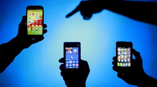

Manfaat Gadget Bagi Pelajar
Manusia senantiasa diciptakan oleh Allah dengan kelebihan dan kekurangan masing-masing, dan telah dianugrahkan HAM yakni hak pokok yang diberikan Tuhan YME sejak lahir kepada masing-masing orang yang harus dilindungi dan dihargai oleh semua orang.
Dengan kemajuan teknologi yang begitu cepat dan pesat ini, manusia berbondong-bondong mengikuti arus perjalanan hidup yang menuntut mereka menuju zaman yang semakin serba mudah. Sedangkan zaman dahulu segalanya masih sangat sederhana dan ketika ingin melakukan sesuatu atau membutuhkan sesuatu lebih sulit karena terhalang oleh kesederhanaan itu, karena belum ditemukan dan diciptakannya teknologi-teknologi yang dapat dengan mudahnya membantu kebutuhan manusia.
Manusia yang tidak faham akan teknologi dituntut untuk mempelajari dan memanfaatkannya, agar mereka tidak dianggap sebagai salah satu manusia yang ketinggalan zaman. Kenapa demikian?.., karena di era sekarang ini teknologi menjadi kebutuhan primer yang harus dipenuhi untuk membantu dan memudahkan manusia dalam segala bidang.
Sekarang ini yang menjadi tren utama dalam salah satu teknologi yang ada adalah Gadget, seperti: Handpone, tablet, laptop, kamera dan lain-lain. Seakan-akan gadget menjadi makanan semua orang baik dari semua kalangan, laki-laki perempuan, besar kecil, tua maupun mudah, mereka semua senantiasa mengikuti arus perkembangan teknologi pada saat ini.
Memang gadget adalah sebuah fitur untuk mempermudah segala kebutuhan dan kegiatan manusia, sehingga digemari dan menjadi pilihan dari berbagai kalangan, terutama kalangan pelajar pada saat ini, degan alasan yang dapat memudahkan para pelajar untuk: Mengakses informasi, menambah wawasan, sebagai gaya hidup dan eksistensi diri. Mereka menganggap bahwa gadget sekarang ini seperti teman sendiri, bagaimana tidak, karena gadget memiliki aplikasi dan pembaharuan dari hari ke hari yang membuat hidup manusia bisa dikatakan lebih instan.
Banyak pelajar yang menggunakan gadget disekolah mereka, seperti: HP Android, laptop dan sejenisnya, karena memang tidak dapat dipungkiri lagi bahwa saat ini kehadirannya sangat membantu dan bermanfaat bagi mereka, salah satunya dalam proses pembelajaran.
Adapun manfaat adanya gadget bagi kalangan pelajar antara lain:
1. Membantu para pelajar dalam mengerjakan tugas sekolah
Dengan fasilitas yang ada dalam gadget, para pelajar dapat dengan mudah mencari refrensi atau bahkan bisa mencari informasi untuk tugas-tugas yang mengemban mereka dengan mudah sehingga cepat terselesaikan.
2. Memudahkan komunikasi
Dengan adanya gadget kita dapat melakukan komunikasi jarak jauh tanpa bersusah-susah menulis surat seperti komunikasi zaman dahulu sebelum terciptanya alat-alat yang memudahkan kita dalam berkomunikasi. Selain itu semisal pelajar tesebut mempunyai tugas yang kurang difahami bisa tanya-tanya ke temannya dengan cepat lewat media gadget atau seterusnya. Adanya sosial media seperti: facebook, twitter, email, blog,BBM, whatshap dan lain-lain juga, membuat anak muda zaman sekarang lebih mudah mencari teman dari berbagai daerah yang jauh sekalipun.
3. Sebagai media refresing
Dengan gadget yang mereka miliki dapat dijadikan media refresing sekaligus hiburan ketika mereka lelah dan jenuh setelah menyelesaikan tugas-tugas mereka. Seperti bermain game, bersosial media dan lain-lain.
4. Mengakses informasi
Informasi menjadi sangat penting bagi setiap pelajar, oleh karena itu dengan gadget mereka dapat lebih mudah membuka berbagai situs untuk mencari informasi yang mereka butuhkan. Selain itu mereka tidak akan ketinggalan berita-berita aktual yang sedang buming dibicarakan.
5. Eksistensi diri
Bagi para pelajar yang memiliki kemampuan menulis, mereka dapat membuat cerita atau menulis tentang pengalaman mereka di media sosial sehingga dapat menyalurkan kemampuan yang mereka miliki. Sehingga karya tersebut dapat dibaca dan diketahui banyak orang. Tidak menutup kemungkinan mereka bisa menjadi salah satu inspirator yang diakui dunia.